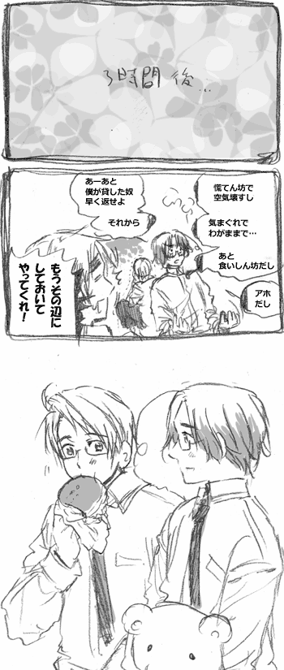

|
■文句いうカナダさん■ ■カナダさんと一方的な好意■ ■カナダさんの家の人■ フランス系とイギリス系 大陸にわたっても仲悪いよ！ ちなみにイギリス、フランスの次に 多いのがドイツ、イタリア系。 【ケベック】 フランス系の多いカナダの州。 昔独立騒ぎになったけど反対票５０.６％で なんとか独立を思いとだどまった。 ■カナダさんがんばる！■ 【未来の未来は今にある】 カナダ人の名言。 【とってもエスニックシティ】 カナダさんは外国人大歓迎な方針をとったため カナダの主要都市、トロント、バンクーバーは 韓国、中国からの留学生、移民が増えまくっていて 街を歩けば韓国語の会話や看板、お店が溢れている エスニックな雰囲気の街になりつつあります。 韓国では一生に一度、英語圏に留学していることが 一種のステータスになってるんだそうで カナダは物価も安く留学生には人気の場所。 そしてカナダのあまりの居心地の良さに そのまま住みつく人が多いみたい。 それだけなら大歓迎ですが チャイナタウンでは麻薬が普通に買えたり 元々商売下手なカナダ人の職が取られてしまったり （ちょっと成長するとアメリカ企業に吸収されるカナダ企業） 政治面にも入ってこられちゃったりしていて さらにどこの国の政治だ？状態になってる模様。 でもって追い打ちに カナダ警察のやる気のなさが異常なので カナダさんの苦労は絶えません。 ■カナダさんとイギリスとフランス■ ■アメリカとキャッチボール■  カナダ人ののんびり屋さんっぷりはすさまじすぎる。 カナダに入国するときは時間に余裕持ちまくっていこうね！ どんなに混んでる時でもカナダ人は しっかりお昼休憩もコーヒータイムも取ってくるので 待たされる方は大変だぞ！ 【you sure?】 若い子がよくしゃべる抜き言葉。 【どうでもいい小話：日本とカナダさん】 「ミスターロボト」（Mr ROBOTO) っていう歌が昔カナダではやったんですが 「ドモ、アリガットー♪ドモドモ♪」という謎の日本語が入ってます。 カナダ人はその曲が日本でも有名だと思っています。 ■ちびっこ■ ■Ｇ８再び！■ 【どうでもいい話】 実はカナダさんの国境は いまだにあやふやである。 ■カナダさんとアメリカのケンカ■  かなださんとキューバさん■ カナダさんとキューバさんの仲は結構良好です。 |
||||||||||